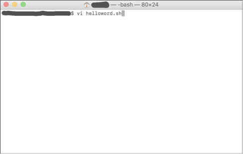

There are an unlimited number of editors available for writing shell scripts in Linux and Mac. A few are installed by default; some are used through the terminal and some others use a graphical interface (GUI). They all have pros and cons and the decision to use one or another is totally personal. In this section I will explain how to use the editor vi, which is installed by default in both Linux and MacOS and can be accessed and used through the terminal window.
These are some of the advantages of vi:Generally, many people with relatively good experience programming love this editor. In my opinion, it's a good tool to use once you are familiar with shell and have been programming for a while. However, it might be a great option for you if you like challenges or if you are already somehow familiar with shell.
To create a new file, type (on the command line) vi <filePath>/<filename>. For example, if you want to create a file called test.sh in the desktop, you should type vi ~/Desktop/test.sh. The vi editor will open in the current terminal.
This program runs in two modes, the command mode and the typing mode. By default, it opens in command mode. What this means is that anything you type is not actually being registered in the file but are commands. For example, if you type :q! as soon as you open the file, it will quit without saving (because :q! is the command for ignoring any modifications and exiting. If you type :w it will save changes to the file (or if you haven't write anything, it will just create an empty file). To change to typing mode, type a (a is the command for entering typing mode). After you type a (in lower case), you can start editing your file. To go back to command mode (for example to save changes), press the key esc (top left corner of the keyboard).
Using the vi editor for the first time Open the vi editor, create a script that prints "Hello Word", and save it with the file name helloword.sh
Step 1: Open the vi editor

Step 2: Type a to start editing the file. You will see that an
--Insert-- message in the bottom of the terminal appears. This means that now you are in typing mode.
Step 3: Start typing commands. The simplest command, to print a message such as
"Hello World" (or any other) is echo. The
syntax of this command is the word echo followed by the message you want to
print out between quotation marks (in this case "Hello World!").

Step 4: Once you finish your script, press the esc key to enter command mode.
You will see that the --Insert-- message at the bottom of the terminal disappears (this means that now
you are in command mode).

Step 5: Save changes and exit the vi editor. In order to do this, type :wq
(to write (w) and quit (q) at the same time).
The table below will show you the most commonly used commands for vi.

Step 6: To be able to execute the script, you will have to give it running permissions. The topic of
permissions is a lot more complicated, so I will not go into details now (I will talk about it later). For now,
all you need to know is that to give running permissions to your script you have to type
chmod 775 helloword.sh

The following table shows a list of vi commands that can be used in command mode and the action that will happen in each case. In general, a number preceding any vi command will tell vi to repeat the command that number of times. For example, p is the command for pasting. If you write (in command mode) 2p, then vi will paste whatever you copied two times where the cursor is currently located.
| Key/command | Action |
|---|---|
| [ESC] | Switch to command mode |
| [ctrl] b | Scroll backward one screen |
| [ctrl] d | Scroll down half screen |
| [ctrl] f | Scroll forward one screen |
| [ctrl] u | Scroll up half screen |
| . | Repeat last command |
| $ | Go to end of line |
| ? string | Search backward for string |
| / string | Search forward for string |
| :0 | Go to beginning of line |
| :N | Go to line N |
| :N,Md | Delete lines N to M |
| :N,MmP | Move lines N to M and paste them after line P |
| :N,MtP | Copy lines N to M and paste them after line P |
| :N,Mw file | Save lines N to M to file |
| :q | Quit (does not save any changes) |
| :q! | Ignore any modifications made and quit |
| :%s/old/new/option |
Searches and replaces the string old by the string
new in the entire file The following letters can be added in the field option: c to prompt for confirmation g to replace all the occurrences of the string |
| :s/old/new/option |
Searches and replaces the string old by the string
new in the line in which the cursor is located
The following letters can be added in the field option:
c to prompt for confirmation g to replace all the occurrences of the string |
| :set ignorecase | Ignore case sensitivity during search |
| :set noignorecase | Restore case sensitivity during search |
| :set number | Turn on line numbering |
| :set nonumber | Turn off line numbering |
| :syntax on | Turn on syntax colors in the text |
| :syntax off | Turn off syntax colors in the text |
| :w | Save changes |
| :w file | Save changes to file |
| :wq | Save changes and quit |
| :x | Save changes and quit |
| a | Switch to editing mode and continue writing where the cursor is located |
| A | Switch to editing mode and continue writing at the end of the line where the cursor is located |
| i | Switch to editing mode and continue writing where the cursor is located |
| I | Switch to editing mode and continue writing at the beginning of the line where the cursor is located |
| cw | Delete the rest of the word in which the cursor is located (keeps the characters located before the cursor) |
| D | Delete the rest of the line in which the cursor is located (keeps the characters and words located before the cursor) |
| dd | Delete the entire line where the cursor is located |
| dw | Delete the whole word in which the cursor is located |
| J | Put the next line at the end of the line where the cursor is located |
| o | Open line below cursor |
| O | Open line above cursor |
| p | Paste below current line |
| P | Paste above current line |
| :u | Undo previous command |
| :U | Undo all changes to line |
| x | Delete text at cursor |
| X | Delete (backspace) text at cursor |
| yy | Copy line in which the cursor is located |
As I previously mentioned, there is an unlimited number of editors and the choice of which to use is totally personal. The following editors are available for both Linux and MacOS: vim, emacs, gedit (which is also installed by default in Linux and uses a GUI, great for beginners), and Eclipse (among many others). Eclipse is a lot more than an editor; it is a development environment used for programming in many other languages (mainly Java) and for software development and modeling. The following are editors available only for MacOS: Xcode, TextWrangler, TextMate, Notepad++, and Atom (among many others).
Running a shell script is easy. You only type the path and name of the file in the command line and then press
enter. For example, if your script is located in the Desktop and is called helloWord.sh, then to execute it
you should type the following in the command line:
$ ~/Desktop/helloWord.sh
If you get a Permission Denied error, this means that you must change its permissions to make it runnable.
The topic of permissions is a bit complicated and will be explained in detail in chapter 12. But for now, you
only need to know that the following command will allow you to execute the script if it's not runnable:
$ chmod 775 <script_path_and_name>